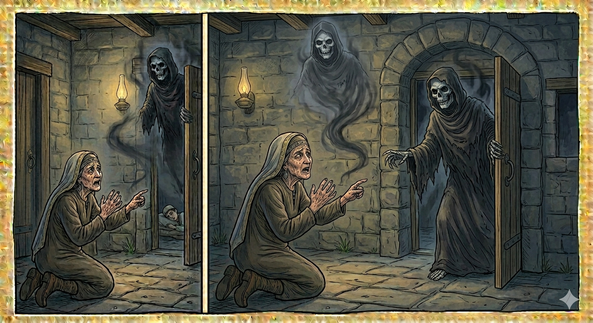

И.А. Дахкильгов. Хьехаме дувцарш - поучительные рассказы-притчи.
И.А. Дахкильгов. Хьехаме дувцарш - поучительные рассказы-притчи. Из ингушского фольклора.

Ӏоажал тӀаеча, воӀ а вицлу
Бахаш хиннаб нанеи воӀи. Цкъа бийсанна нана йолча енай Ӏоажал. Аьннад цо: - Укх дунен тӀара рузкъа кхоачаденнад хьа. Йоле, бакъдолча дуненга дерз вай. Кхераенна хьайзай йоккха саг. Малейкага аьннад цо: - Дукха даха хьо, са малейк! Тишъеннача, къаеннача сох фу ду оаш? ДӀа-а, эгӀарча цӀагӀа, улл хьона са воӀ. БугӀа мо тоавенна волаш, бий миссел дӀаягӀаш фоарт йолаш. Из вига тоам ба хьона. - ХӀарача сага ший-ший Ӏоажала ди да хоададаь, - аьнна, малейко йоккхача сага са дӀаийцад. Ӏоажала ди тӀаэттача ший деналах вохаш хул саг.
РУССКИЙ
Когда приходит Смерть, и сына забывают
Жили старуха и ее сын. Как-то ночью к старухе пришла Смерть и сказала: - Вставай, пошли. Закончилось твое пребывание в этом мире, теперь уходишь ты в праведный мир. Испугалась старуха и сказала Смерти: - Да живи ты долго, ангел смерти, - запричитала она, - зачем я вам нужна такая старая и убогая? Во-он в той комнате лежит мой сын. Телом он - бугай. Шея у него торчит в два кулака. Возьмите лучше его. - Каждому человеку отмерен свой день смерти, - ответил ангел и забрал у старухи ее душу. В день смерти человек, случается, теряет свое мужество.
ENGLISH
When Death comes, people forget their son
There lived an old woman and her son. One night, Death came to the old woman and said: 'Get up, let's go. Your time in this world is over; now you are to depart for the world of the righteous.' The old woman was frightened and said to Death: 'May you live a long life, angel of death,' she wailed, 'why do you need someone as old and wretched as me? My son is lying over there in that room. He's a strapping lad. His neck is as thick as two fists. You'd better take him instead.' 'Every person's day of death is predestined,' replied the angel, and took the old woman's soul from her. On the day of death, a person sometimes loses their courage.
НОХЧИЙН
Ӏожалла тӀейеъча, воӀ а вицло
Бехаш хилла наний воӀӀий. Цхьана буьйсана нана йолча йеъна Ӏожалла. Аьлла цо: - ХӀокху дуьненан тӀера рицкъ кхачаделла хьан. Йоле, бакъдолчу дуьнене доьрзу вай. Кхерайелла хьойзина йоккха стаг. Малике аьлла цо: - Дукха даха хьо, сан малик! Тишъеллачу, къанйеллачу сох хӀун до аш? ДӀа-а, неӀйистера цӀен чохь, Ӏуьллу хьуна сан воӀ. БугӀа санна товелла волуш, буй санна дӀайагӀна ворт а йолуш. Иза вигар гӀолехь ду хьуна. - ХӀора стеган ше-ше Ӏожаллан ден ду схьадина, - аьлла, малико йоккхачу стеган са дӀаэцна. Ӏожаллин де тӀехӀоьттича шен доьналах вухуш хуьлу стаг.
ПОГОВОРКИ
Варгвоаца унахо Ӏуйранга ма валва. Обреченный на смерть да не дотянет до утра (о прекращении страданий). May one whose death is certain not linger till morning (of ending suffering). Вервоцу лазархо Ӏуьйранга ма валийла.Вахар дац пхьа боаллачун, - валар да-кха. У кровника жизнь – не жизнь, а смерть (в постоянном страхе смерти). For a man with a blood feud hanging over him, life is not life — it's death. Вахар дац пхьа боллачун, валар ду.Вахара санна валара а эш ираз. Счастье одинаково нужно и для жизни и для смерти. Both life and death need good fortune equally. Вахаран санна валаран а йоьшу ирс.Да ца вийлхача дакъах нах бийлхабац. Если ты сам не оплакиваешь своего покойника, то чужие и подавно не заплачут. If you yourself do not mourn your dead, others certainly won't. Да ца вилхинчу докъах нах билхина бац.Дов-шов лехачоа валар корадаьд. Кто ищет ссору и войну, тот находит смерть. He who seeks feud and war finds only death. Дов-шов лоьхучун валар карийна.КӀанат майра хиларх Ӏоажал (боршал) хьалхаяргъяц, кӀант зовза хиларах Ӏоажал тӀехьаяьргьяц. Сколь храбрым бы ни был молодец, мужского ему не прибавится (смерть не отодвинется); сколь трусливым бы ни был молодец, смертный час он не оттянет. No matter how brave a young man is, death will not come sooner; no matter how cowardly he is, it will not come later. КӀант майра хиларх Ӏожалла (боршалла) хьалхайер йац, кӀант зовза хиларх Ӏожал тӀехьайер йац.Лазаро “ахӀ” оалийт. Болезнь заставляет охать. Illness makes a man groan. Лазаро "ахӀ" олийта.Могаш хилар да вай хьал. Наше благополучие – это здоровье. Health is our true wealth. Могуш хилар ду вай хьал.Саг Ӏовешшехьа а валара кхол. Человек рождается для будущей смерти. A man is born already destined for death. Стаг схьавешнехьа а валаран кхуллу.Хийла денал дола къонах вехав Ӏоажала ди эттача. В смертный час нередко и мужественный человек проявляет слабость. Even a courageous man can falter when his final hour comes. Хийла доьнал долу къонах воьхна Ӏожаллан де хӀоьттича.ХӀарача саго ше кӀомду ший гирдз. Каждый сам чешет свою чесотку. Everyone scratches their own itch. ХӀорачу стага ша къамдо шен гирз.Цамогаш хилча бу унахцӀенонна мах. Цену здоровья узнают только заболевши. The worth of health is known only once illness strikes. Цомгуш хилча бо унахцӀеналонна мах.Яьси дийшачоа ха йоагӀаргья цунна а яьси дешаргдолаш. Читающему отходную молитву когда-нибудь ее тоже прочтут. The one who reads the funeral prayer will one day have it read for them too. Ясин дешначун хан йогӀур йу цунна а ясин доьшур долуш.Ӏоажалах кхийра а веннав, ца кхийрар а веннав. Умерли и тот, кто боялся смерти, и тот, кто ее не боялся. Both he who feared death and he who did not, died just the same. Ӏожаллех кхоьрург а велла, ца кхоьрург а велла.